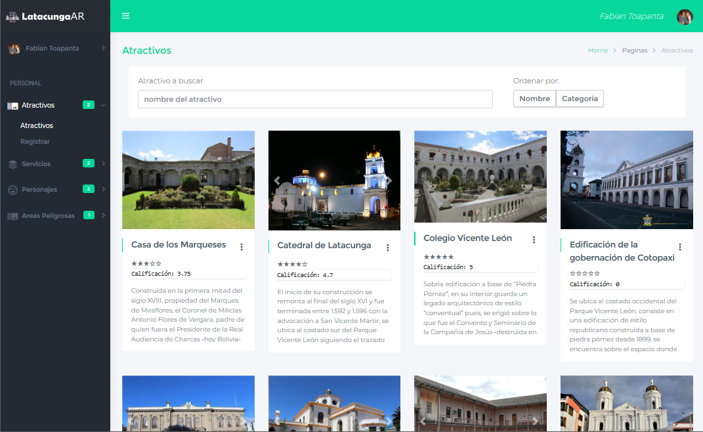
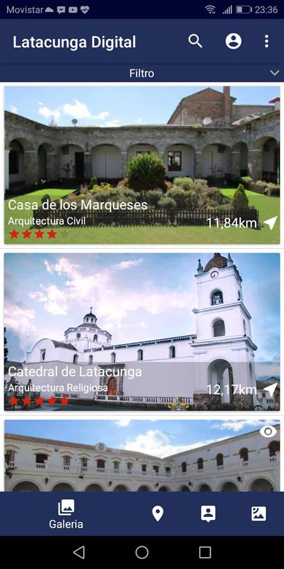

Score360
Copiloto financiero con IA.
Hackiatón de Banco Guayaquil.
Mi aporte: DevOps y cloud con Terraform, Container Apps e identidades.
Ver el proyectoArquitectura.
Código. DevOps.
Conecto el ciclo completo del software.
Recorrer el cicloQuito, Ecuador · AWS & Azure
Traduzco necesidades en una propuesta técnica.
Preventa técnica · RFP / RFI bancarios
Mi fortaleza en cada etapa. Selecciona una para explorar.
Cloud, código, datos y automatización.
Las piezas con las que construyo.
Y también: Container Apps · Key Vault · AppDynamics · Log Analytics · Azure AI Foundry · MCP
Arquitectura y entrega en equipo.
Aplicaciones que puedes explorar.
Copiloto financiero con IA.
Hackiatón de Banco Guayaquil.
Mi aporte: DevOps y cloud con Terraform, Container Apps e identidades.
Ver el proyectoTurismo con realidad aumentada
y geolocalización.
Aplicación móvil y administración
con Angular y Firebase.


Software, arquitectura y DevOps.
Una conversación puede ser el primer paso.
Sr Digital Business Presales
Cobis Topaz
Máster DevOps · UNIR
Ingeniería en Software · ESPE